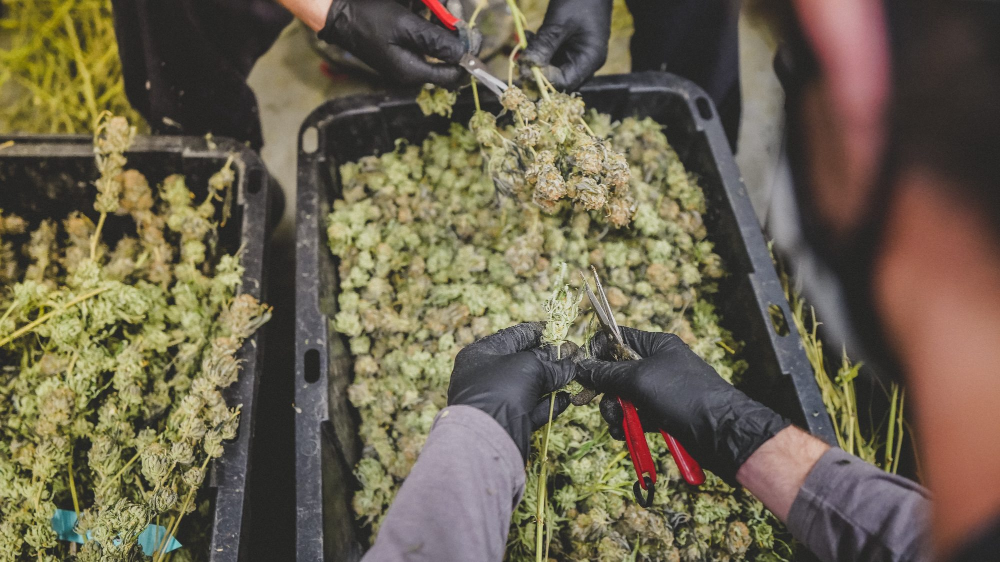

We love our plants, our people, and our patients, in that order, and all at once.
This guide is not a sales sheet. It is a patient's companion, a calm, unhurried walk through how cannabis meets the body, what the plant is actually made of, and how to use it with intention rather than guesswork.
Read it cover to cover, or keep it nearby and return to the parts you need. However you use it, our hope is the same: that it helps you find your natural state, of wellness, balance, and relief.
From your neighbors at Natural State Medicinals
Where would you like to start?
The NSM standard
Held to a pharmaceutical standard, grown with a cultivator's hands.
01
How cannabis meets the body
The System
{{ kSystem }}
CB1
Brain & nervous system. Where THC's feel comes from.
CB2
Body & immune system. Where quiet, physical relief lives.
02
Why the whole plant matters
The Entourage Effect
Think of the plant as an orchestra, not a soloist.
No single compound tells the whole story. THC, the minor cannabinoids, and the aromatic terpenes each play a part, and they shape one another as they play. That cooperation has a name.
One instrument, playing
I
A single instrument
A single instrument can carry a tune. THC alone will get the job done.
II
The supporting cast arrives
Then the minor cannabinoids join in. CBD, CBG, CBN, and CBC each add a different color to the sound.
III
The terpenes shape the room
Aromatic terpenes fill the spaces between, steering the experience toward calm, focus, or ease.
IV
An orchestra, together
Played together, the compounds shape one another and create something fuller than any one could alone.That is the entourage effect.
Every conversation about cannabis starts here. These three words are shorthand, not science, a way to set expectations before the terpenes and cannabinoids tell the real story. Modern genetics have made the lines blurry enough that most researchers have moved on from the taxonomy entirely. But the categories stick because they are useful, the same way cardinal directions are useful even though the world is more complicated than north and south.
You will see these colors again throughout the flower librarySativaHybridIndica
{{ t.word }}
{{ t.name }}
{{ t.assoc }}
{{ t.pull }}
The point of all this
SativaHybridIndica
Two indicas can feel completely different.
The category sets an expectation. The terpenes and cannabinoids inside decide the experience. That is why this guide leans on lab data, not just the label.
The aromatic oils that give each strain its smell, its taste, and much of its feel. Two strains can share a THC number and land completely differently because of these. Tap one to explore it.
{{ activeTerp.name }}
Aroma & flavor
{{ activeTerp.flavor }}
Reported benefits
{{ activeTerp.medical }}
Also found in
{{ activeTerp.example }}

“Peace is our natural state of being.”
Laozi
06
{{ strainCount }} cultivars, decoded
The Flower
Every cultivar carries its own lab-verified terpene and THC profile, drawn from real certificates of analysis. Filter, then tap any strain to see what is inside.
Showing {{ shownCount }} of {{ strainCount }} cultivars
We love our plants, people, and patients first. Here is the journey, from a single cutting to the jar on the shelf.
{{ g.num }}
{{ g.name }}
{{ g.copy }}
08
Five steps, harvest to jar
Plant to Product
Every product on the shelf starts as the same thing: the sticky resin on the flower, where the cannabinoids and terpenes from earlier in the guide actually live. This chapter follows that resin from harvest day to the jar, one step at a time. By the end, you will be able to read a label and pick a format with confidence.
01Step one · The plant
Start with the plant
The difference starts on harvest day. Cured material is dried and cured the traditional way before it is extracted. Live material is frozen within hours of the cut and never dried at all. Live is the premium path: more of the plant’s terpenes make it into the jar, and you can taste it. Cured is the classic, familiar path.
From harvest to jarScroll to watch both.
{{ lc.phase }}{{ lc.dayLabel }}
HarvestDay 14Day 30
{{ r.eyebrow }}{{ r.title }}{{ r.status }}
{{ s.title }}{{ s.note }}
Aroma kept{{ r.kept }}
The difference
Live: in the jar on day one, with nearly all of its aroma.
Cured: in the jar around day 30, with about half.
Now pick a jar
Harvest day
{{ lc.d.name }}{{ lc.d.how }}
{{ r.label }}{{ r.text }}
Textures
Aroma levels are illustrative. Real terpene loss depends on the strain, the drying room, and how carefully the plant is handled. These are general tendencies, not rules.
02Step two · Extraction
Get the resin out
Live or cured, the resin still has to come off the plant. Methods that use a make resin. Methods that use only ice water, heat, and pressure make rosin. Tap a method to see how it works and what it trades.
Method · rated 1 to 3
{{ e.tag }}
{{ e.lead }} {{ e.rest }}
{{ e.tradeoff }}
Clean comes from the process, not the method: every solvent-extracted batch is purged and every batch is lab-tested before it ships.
Flavor, potency, and scale are rated relative to one another, not on an absolute scale. No method is best at all three, which is why we run more than one.
03Step three · Texture
See what it becomes
The same oil can be finished a dozen ways. Texture is mostly a matter of how it is agitated, , and held as it comes off the extraction, and it changes how a concentrate handles, tastes, and dabs. Here is the whole shelf, side by side.
No rig? No problem.
Texture only matters if you . If you would rather not, carts and disposables come pre-filled and ready to go. A is only needed for the formats below.
The consistency scale
Tap a format.
Wet, liquidDry, crumbly
{{ conc.cur.name }}{{ conc.cur.tag }}
{{ conc.cur.description }}
Dab temp{{ conc.cur.temp }}
Texture{{ conc.cur.texture }}
Tool{{ conc.cur.tool }}
Our process
How we make ours
From the harvest room to the label, these four steps stand behind every jar we send out.
01Within hoursHarvest to freezerLive material is cut by hand, frozen within hours, and kept frozen until extraction. It is never dried.
02Under vacuumPurgedEvery solvent-extracted batch is gently heated under vacuum until the solvent is gone. Our CO2 is beverage-grade at 99.9% purity, the same technology used to decaffeinate coffee.
03Residual solventsTested, every batchEvery solvent-extracted batch is purged, and every batch is lab-tested before it ships.
04On every productThe QR codeScan the code on any product to read our entire, unedited lab results.
Our carts run on CCell EVO MAX full-ceramic hardware, so no metal wick or cotton ever touches the oil.
04Step four · Formats
Choose how you take it
Concentrates are one way in. The same resin also goes into vapes, syringes, troches, tinctures, edibles, and topicals. What really separates them is the route: how it enters your body, and so how soon you feel it and how long it stays.
Why ours
Arkansas’s first trocheWe were the first in the state to bring a sublingual troche to market.
In High TimesOur 3:1 suppositories were featured in High Times Magazine.
Route one · Breathe it in
Vapes and concentrates
Inhaled through a vape or a dab. The fastest route and the easiest to adjust: one draw, wait, decide.
OnsetWithin minutesPeak10 to 30 minLasts1 to 3 hours
{{ f.description }}
Types & dosages
{{ fr.name }}{{ fr.dose }}
Types & dosages
{{ fm }}
What the oil types mean
{{ t.name }}
{{ t.desc }}
How to use
{{ f.howTo }}
Route two · Under the tongue
Troches and tinctures
Absorbs through the mouth and skips most of digestion. Steadier than inhaling, quicker than an edible.
Onset15 to 45 minPeak60 to 90 minLasts3 to 5 hours
{{ f.description }}
Types & dosages
{{ fr.name }}{{ fr.dose }}
Types & dosages
{{ fm }}
What the oil types mean
{{ t.name }}
{{ t.desc }}
How to use
{{ f.howTo }}
Route three · Eat it
Edibles
Dosed by the piece so you always know your number. It goes the long way, through digestion, so start low and give it the full window.
Onset30 to 90 minPeak2 to 4 hoursLasts4 to 8 hours
{{ k.desc }}
Route four · On the body
Topicals and suppositories
Topicals work on the skin where you apply them, without a high for most patients. Suppositories absorb in the lower digestive tract, for patients who cannot take medicine by mouth.
TopicalsOn the skinSuppositoriesLower GIBoth3:1 CBD:THC
{{ f.description }}
Types & dosages
{{ fr.name }}{{ fr.dose }}
Types & dosages
{{ fm }}
What the oil types mean
{{ t.name }}
{{ t.desc }}
How to use
{{ f.howTo }}
05Step five · Your pick
Build your pick
Put it all together. Each question comes from a step above. Answer as many as you like, skip the rest, and the formats re-rank as you go.
{{ q.title }}
{{ q.hint }}
Your matches
{{ pk.emptyText }}
Our top pick for you{{ pk.top.name }}{{ pk.top.what }}
There is rarely one universal answer. The best product fits your needs, your schedule, and your tolerance, not the loudest claims.
10
Track what works for you
The Joint Journal
Relief is personal. Keeping a simple log of what you took and how it felt is the fastest way to find your natural state. Here is what to track.
Tap any field to add or remove it from your journal
The Session Journal
Assembled from the fields you chose above, {{ journalFieldCount }} in all. Keep it in your notes app, or print it and set it by the jar.
11
Cook with NSM
Recipes
Make it your own at home. Every infused dish starts from one of the base recipes below, then portion to your own tolerance and label anything you store.
Short on time? Our infused tincture drops straight into most recipes, no decarb or straining required.
Dose it right
Edibles calculator
Two steps: the infusion you cook, then the dish you make with it. Figures are a theoretical maximum, real potency runs lower.
1Your infusion
Total THC
{{ calc.totalThc }}mg
THC / tsp
{{ calc.thcPerTsp }}mg
CBD / tsp
{{ calc.cbdPerTsp }}mg
2Your dish
Per serving
{{ calc.thcPerServing }}mg THC
+ {{ calc.cbdPerServing }}mg CBD per serving
Cooking losses, uneven mixing, and your own metabolism all lower the real dose. Start with a single serving and wait a full two hours before more.